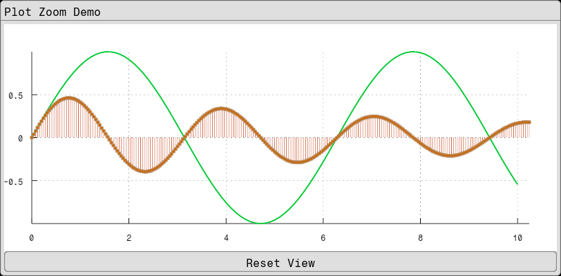

Fugl.jl
Fugl.jl is a functional GUI library written in Julia using OpenGL.
It is intended to be a simple library with few depencdencies, suitable for making scientific applications.
Fugl.jl has a short distance from component to shader, enabling fast and intuitive user interfaces.
Example
using Fugl
using Fugl: Text, TextButton
# Create plot data
time_data = collect(0.0:0.1:10.0)
y_data = sin.(time_data)
# Create stem plot data with 256 points
stem_x = collect(0.0:0.04:10.24) # 256 points from 0 to ~10.24
stem_y = 0.5 * sin.(stem_x * 2) .* exp.(-stem_x * 0.1) # Damped sine wave
# Create plot elements
elements = AbstractPlotElement[
LinePlotElement(
y_data;
x_data=time_data,
color=Vec4{Float32}(0.0, 0.8, 0.2, 1.0), # Green
width=3.0f0,
line_style=SOLID,
label="Sine Wave"
),
StemPlotElement(
stem_y;
x_data=stem_x,
line_color=Vec4{Float32}(0.8, 0.2, 0.0, 1.0), # Red stems
fill_color=Vec4{Float32}(0.8, 0.4, 0.0, 1.0), # Orange markers
border_color=Vec4{Float32}(0.4, 0.1, 0.0, 1.0), # Dark red border
line_width=1.5f0,
marker_size=3.0f0,
border_width=0.5f0,
marker_type=CIRCLE,
baseline=0.0f0,
label="Damped Sine (256 pts)"
)
]
# Create plot state for zoom control
plot_state = Ref(PlotState())
# Define plot style (visual appearance only)
plot_style = PlotStyle(
show_grid=true,
show_legend=true
)
function MyApp()
Card(
"Plot Zoom Demo",
IntrinsicColumn([
# Plot with user-managed state
Plot(
elements, # Elements are passed directly
plot_style, # Style for visual appearance
plot_state[], # State only contains bounds and zoom
(new_state) -> plot_state[] = new_state
),
# Simple reset button
IntrinsicHeight(
TextButton(
"Reset View";
on_click=() -> begin
plot_state[] = PlotState() # Reset to auto-scale
end
)
)
], padding=0.0, spacing=0.0)
)
end
# Run the GUI:
# Fugl.run(MyApp, title="Plot Zoom Demo", window_width_px=812, window_height_px=600, fps_overlay=true)
screenshot(MyApp, "plot_example.png", 812, 400);